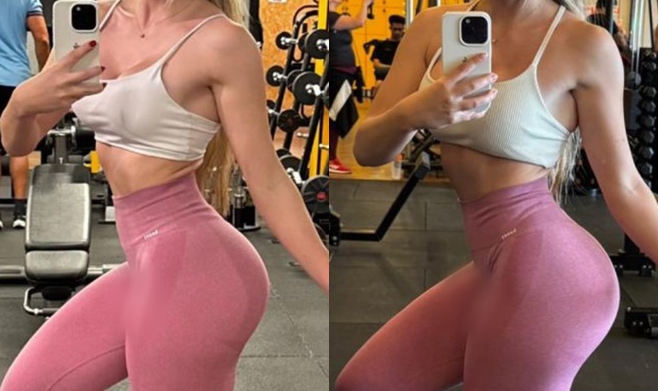
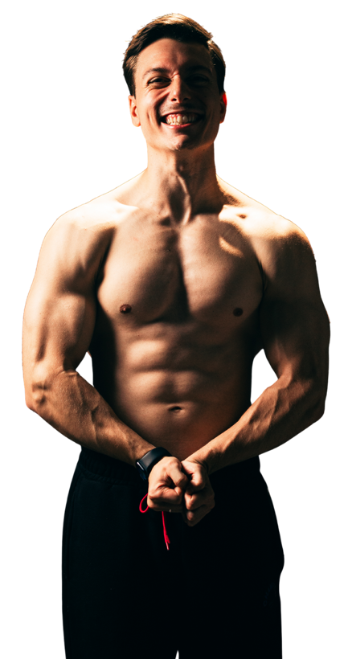
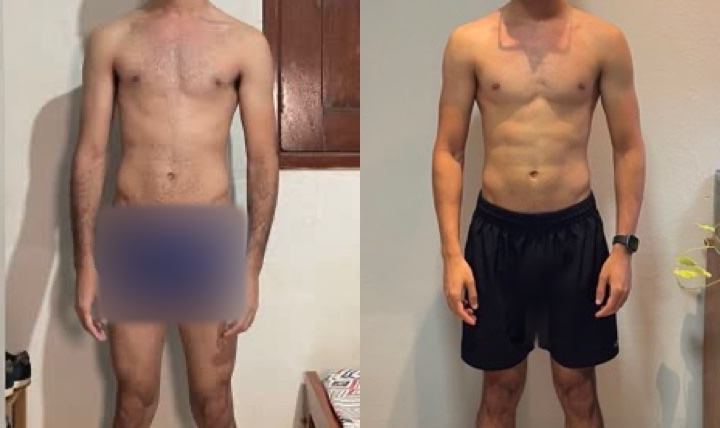
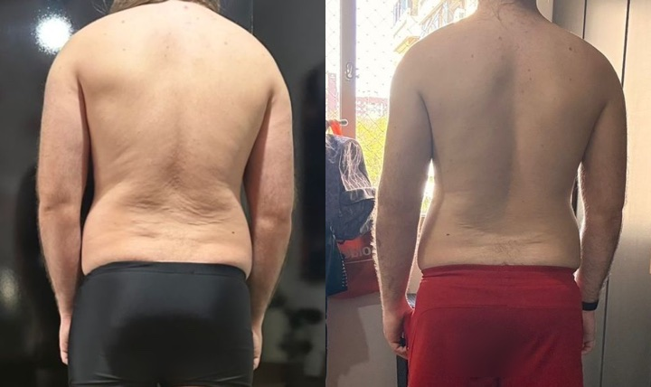
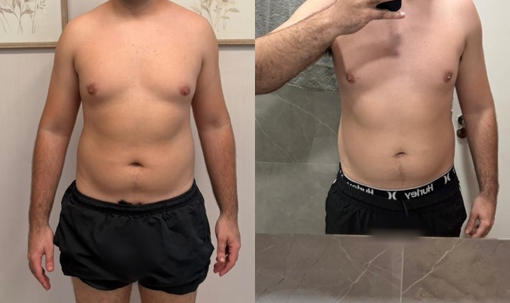
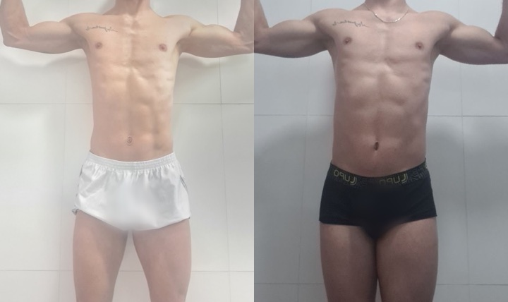
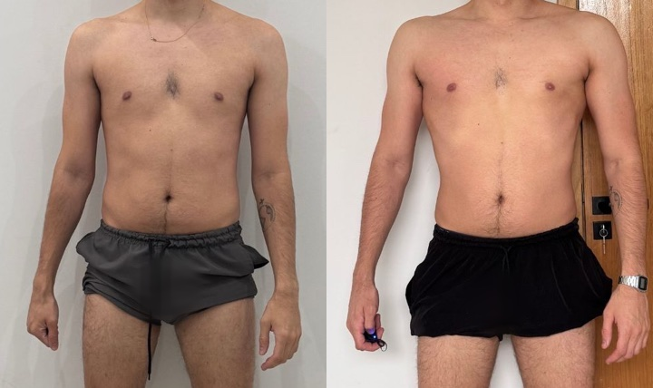
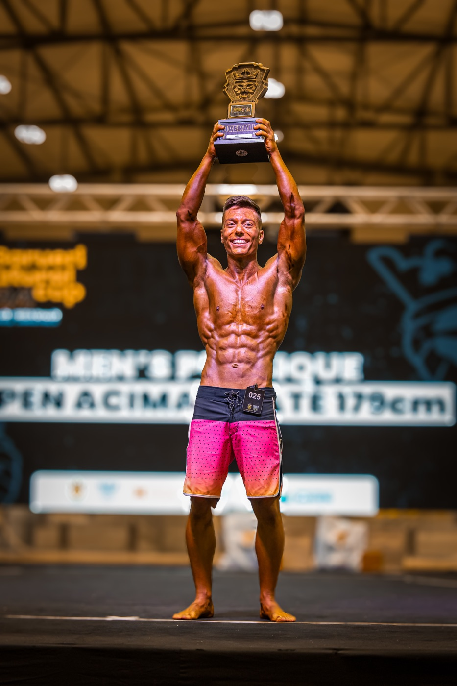

+4,2 kg
Ganho de massa muscular
Musculação
Treino e dieta online
Treino e alimentação feitos para sua rotina, com acompanhamento do campeão mundial de fisiculturismo natural Killyan Scherk e de um nutricionista da equipe.
Musculação na academia Calistenia em casa

Depoimentos

Ganho de massa muscular
Musculação

Ganho de massa muscular
Calistenia

Emagrecimento
Musculação

Emagrecimento
Musculação

Ganho de massa muscular
Musculação

Ganho de massa muscular
Musculação
Por dentro da consultoria
Veja como a gente transforma sua rotina, suas preferências e seus objetivos em um plano de treino e alimentação.
Como funciona
Você pode fazer musculação na academia ou treinar calistenia em casa, inclusive sem equipamentos. O plano parte do que você tem à disposição hoje.
Você preenche uma avaliação para a gente entender seu histórico, sua rotina, suas preferências e o que quer alcançar.
Depois da avaliação, você conversa diretamente com Killyan e com o nutricionista da equipe para alinhar objetivos e tirar dúvidas.
A gente monta um plano de treino e um plano alimentar 100% individualizados, levando em conta seu nível, seus horários e onde você treina.
Mande suas dúvidas e vídeos dos exercícios para receber orientações e corrigir a execução.
A gente acompanha seu progresso toda semana e revisa o planejamento mensalmente, com ajustes conforme sua evolução.

Quem está por trás da consultoria
Campeão mundial de fisiculturismo natural Jr.
Comecei no YouTube ensinando calistenia e levei essa experiência para o fisiculturismo natural. Conquistei cinco títulos, entre eles o brasileiro e o mundial no Natural Olympia de 2024, em Las Vegas.
Hoje, estou me formando em Educação Física e aplico o que aprendi no treino e nas competições para te ajudar a progredir no seu ritmo, na academia ou em casa.
O que você recebe
100% individualizado, com progressão adequada ao seu nível e ao local onde você treina.
Calculado pelo nutricionista de acordo com seus objetivos e suas preferências.
Suporte diário para dúvidas sobre treino, alimentação e como colocar o plano em prática.
Acompanhamento semanal e revisões mensais, com ajustes no treino e na dieta conforme necessário.
Envie vídeos dos seus exercícios e receba orientações para melhorar a técnica.
Bônus em preparação
Aulas sobre treino, alimentação e execução dos exercícios.
Planos da consultoria
Você tem orientação de treino com Killyan e acompanhamento alimentar com nutricionista pelo preço de um só plano. Todos incluem suporte pelo WhatsApp, reavaliações e correção por vídeo.
1 mês de acompanhamento
R$ 250 / mês
R$ 250 no total
Melhor custo-benefício para evoluir
3 meses de acompanhamento
R$ 197 / mês
R$ 591 no total
6 meses de acompanhamento
R$ 187 / mês
R$ 1.122 no total
Garantia condicional
Nos planos trimestral e semestral, se você seguir o plano, mantiver contato com a equipe e, ao fim do prazo de garantia, ainda assim não tiver resultados visíveis e mensuráveis, devolvemos 100% do seu investimento.
90 dias no trimestral 180 dias no semestral
Perguntas frequentes
Sim. A avaliação inicial ajuda a gente a montar um plano adequado ao seu nível e ao tempo que você tem para treinar. Você pode mandar vídeos para receber orientações de execução.
Você pode treinar na academia ou fazer calistenia em casa, inclusive sem equipamentos. A gente adapta os exercícios ao espaço e aos recursos que você tem.
Durante o acompanhamento, você tem contato diário com a equipe para tirar dúvidas, enviar vídeos dos exercícios e compartilhar como está indo com o treino e a alimentação.
Fale com o nutricionista pelo WhatsApp. Ele pode orientar substituições e ajustar o plano para suas preferências, seus horários e seus objetivos.
Chame a gente no WhatsApp se tiver dúvidas sobre os planos ou o acompanhamento.